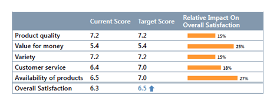
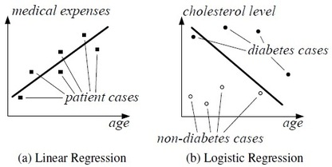
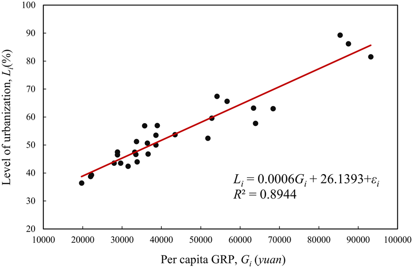

Introduction
Regression analysis is a statistical technique used to model the relationship between a dependent variable and one or more independent variables. The main goal of regression analysis is to understand how changes in the independent variables are associated with changes in the dependent variable and to make predictions or estimations based on this relationship.
Type of Regression Analysis
- Simple linear regression
- Multiple linear regression
- Non-Simple linear regression
Applications
- Economics and Finance
- Market Research
- Medical Research
- Social Sciences
- Predictive Analytics
- Quality Control and Manufacturing
Detail Explanation About Applications
- Economics and Finance:
- Market Research:
- Medical Research:
- Social Sciences:
Regression analysis is widely used in economics and finance to study the relationship between variables such as GDP and inflation, interest rates and investment, stock prices and company performance, etc. It helps in understanding economic trends and making financial forecasts. Predicting economic growth (dependent variable) based on factors such as inflation, government spending, and trade balance (independent variables).
Demand Analysis: The relationship between demand for a product (dependent variable) and its price (independent variable). Regression analysis is used to estimate the relationship between product demand and various factors such as price, income, advertising expenditure, and consumer preferences. It helps economists understand how changes in these variables affect the demand for goods and services.
Asset Pricing Models: Understanding the relationship between an asset's returns (dependent variable) and the market returns (independent variable) to assess the asset's market risk (beta). Regression analysis is used to estimate asset pricing models like the Capital Asset Pricing Model (CAPM) to assess the relationship between an asset's expected return and its risk relative to the market.
Regression analysis is used in market research to identify the factors influencing consumer behavior and purchase decisions. It helps companies understand how changes in marketing strategies, pricing, or product features affect sales and market share.
Market Research in Finance: Estimating the factors that influence a company's stock price (dependent variable) like earnings, debt levels, and market conditions (independent variables). Regression is used to analyse the relationship between customer preferences, demographics, and investment behaviour, helping financial institutions tailor their products and services to meet customer needs.
Credit Risk Assessment: Estimating the impact of interest rate changes (independent variable) on bond prices (dependent variable). Regression helps banks and financial institutions assess credit risk by analysing the relationship between default probability and various credit-related factors, such as credit scores, debt-to-income ratios, and payment histories.
In medical research, regression analysis is used to investigate the relationship between various factors (e.g., lifestyle, genetics, environmental factors) and health outcomes, such as the relationship between smoking and lung cancer risk or the impact of a drug on patient recovery.
Genetics and Genomics: Regression analysis is used to study the relationships between genetic variations (independent variables) and disease susceptibility or progression (dependent variables). Techniques like genome-wide association studies (GWAS) utilize regression to identify genetic markers associated with specific diseases.
Drug Efficacy and Safety: Analysing the relationship between dosage of a drug (independent variable) and its effect on blood glucose levels (dependent variable). Regression analysis is used to assess the efficacy and safety of drugs in clinical trials. Researchers may use linear regression to analyse the relationship between drug dosage (independent variable) and its effect on patient outcomes or adverse reactions (dependent variable).
Regression analysis is applied in social sciences to study the impact of different variables on human behavior and attitudes. For example, it can be used to examine how education level, income, and demographics influence voting patterns.
Family Studies: Regression analysis is applied to understand family dynamics and relationships. For instance, researchers might use regression to examine the association between parenting styles (independent variables) and children's behaviour or academic achievement (dependent variables).
Social Psychology: Investigating the link between the frequency of social interactions (independent variable) and an individual's level of happiness (dependent variable). Regression analysis is employed to study attitudes, opinions, and beliefs. For example, researchers may use regression to examine how exposure to certain messages or media content (independent variable) affects individuals' attitudes and behaviors (dependent variables).
Details Video About the Topic
Conclusion
Regression analysis is a powerful tool for data analysis and prediction. Its applications are diverse and widespread across various fields. The conclusions drawn from regression analysis can provide valuable insights into cause-and-effect relationships, help make data-driven decisions, and identify factors that significantly influence the dependent variable. However, it is essential to be cautious about interpreting the results and to be aware of potential limitations, such as assumptions of the regression model, multicollinearity, and the risk of drawing causation from correlation. When conducting regression analysis, it is crucial to carefully consider the quality and relevance of the data, the choice of variables, and the assumptions made during the modeling process. By adhering to good statistical practices and applying regression analysis appropriately, researchers and analysts can gain valuable insights and improve decision-making in their respective fields.